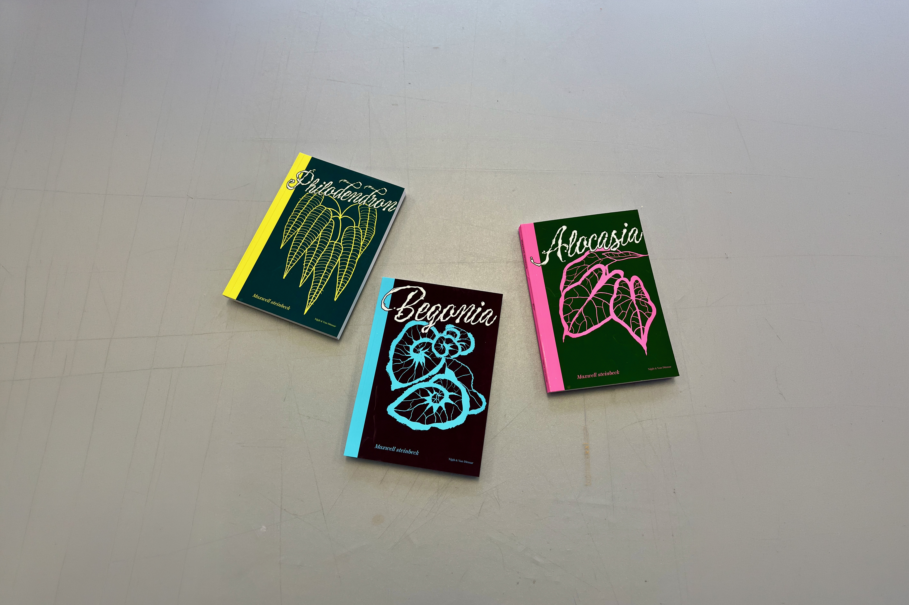
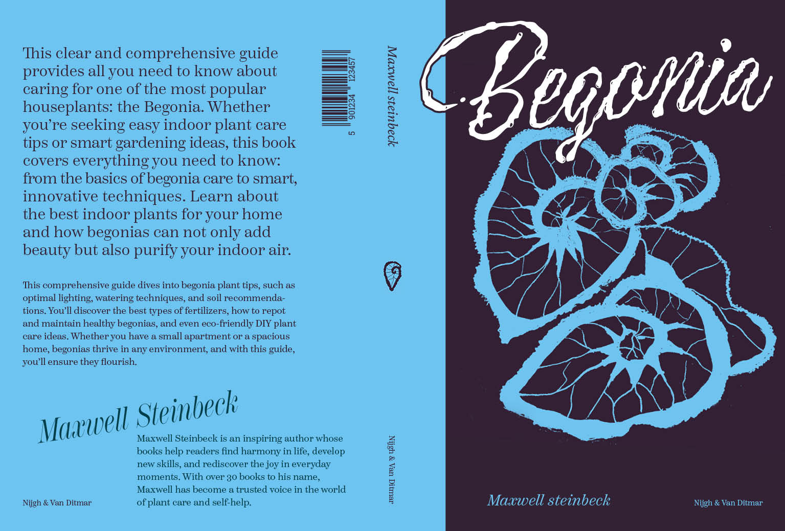
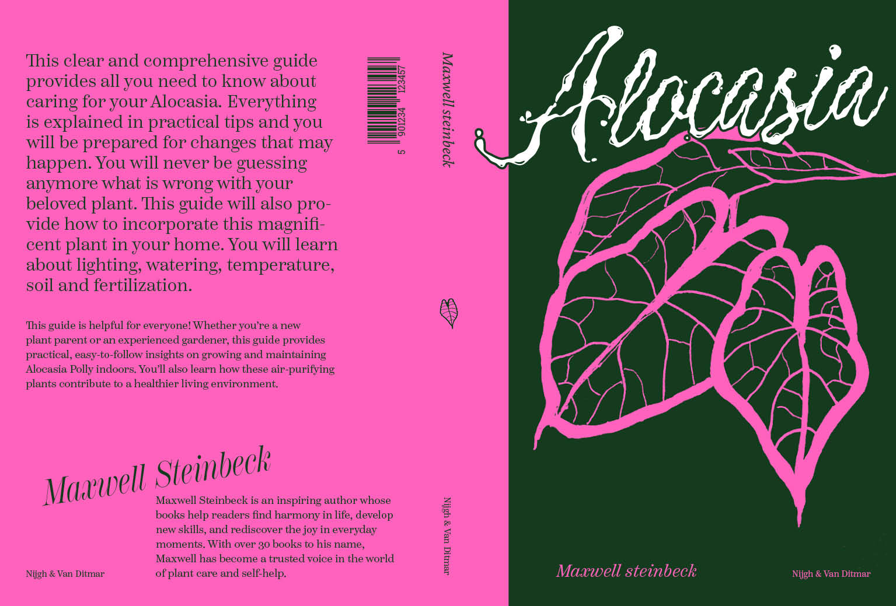
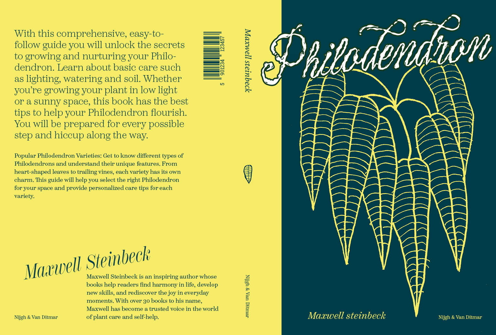
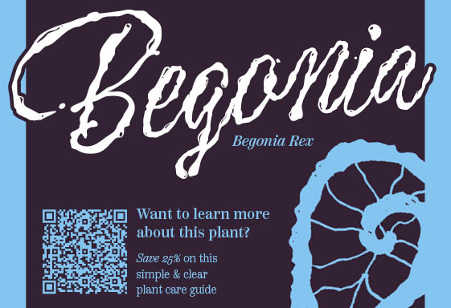
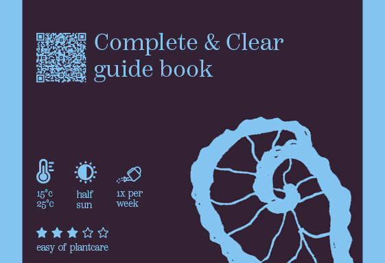

Voor Super Series maakten we een reeks van 3 producten of voorwerpen. Ik wist direct dat ik iets rond planten ging maken en maakte uiteindelijk de covers voor mini guides voor bepaalde plantensoorten.
De basis van het ontwerp is de zelf getekende illustratie op de cover. Je kan natuurlijk geen plantenboek maken zonder de plant te tonen. Ik koos passende typo voor de titel en andere tekst. De kleur op de achterkant liet ik doorlopen om een moderne en onverwachte twist te geven. Een belangrijk deel van het boekje is dat ze duidelijk en compact zijn. Daarom heb ik een duidelijk tekstje op de achterkant geplaatst om het boek te beschrijven. Op de rug van het boekje plaatste ik telkens mini illustraties die ik ook zelf tekende.
Als promotiemateriaal voor de boekjes ontwierp ik een plantenkaartje dat bij de bepaalde plant in de plantenwinkel geplaatst wordt. Zo wordt de diverse doelgroep direct en goed bereikt.






